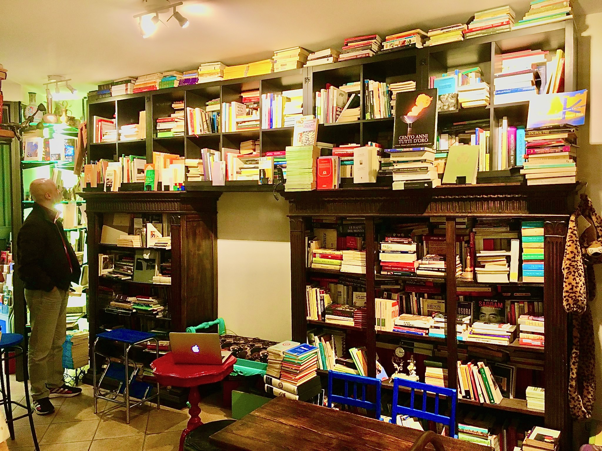
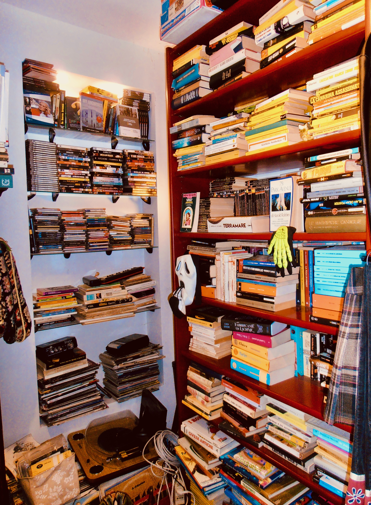
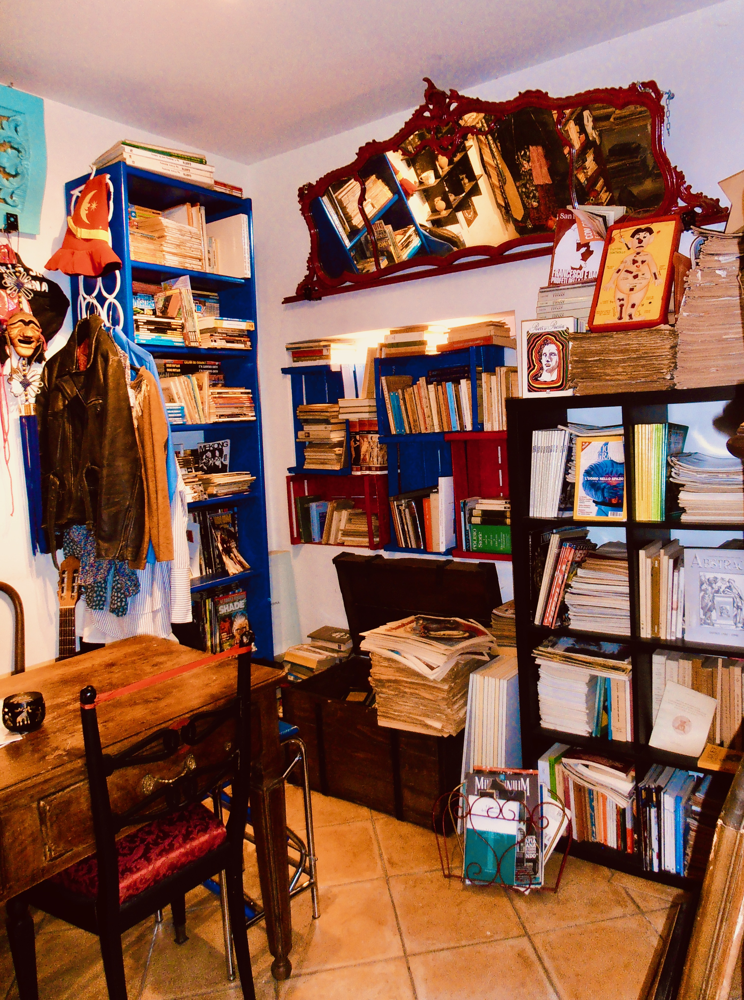
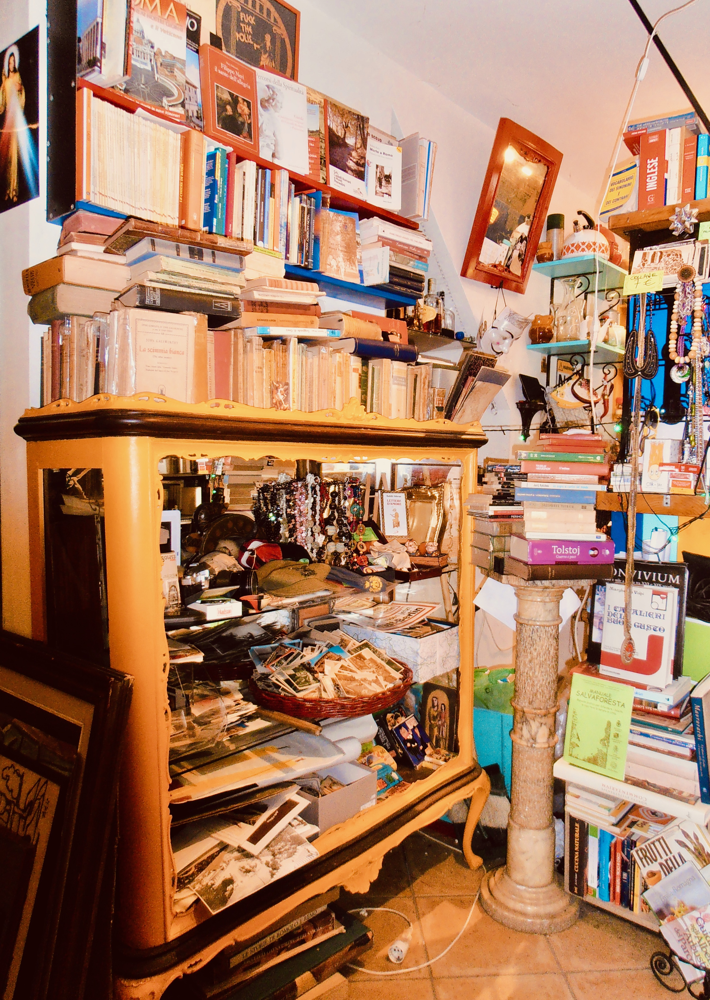
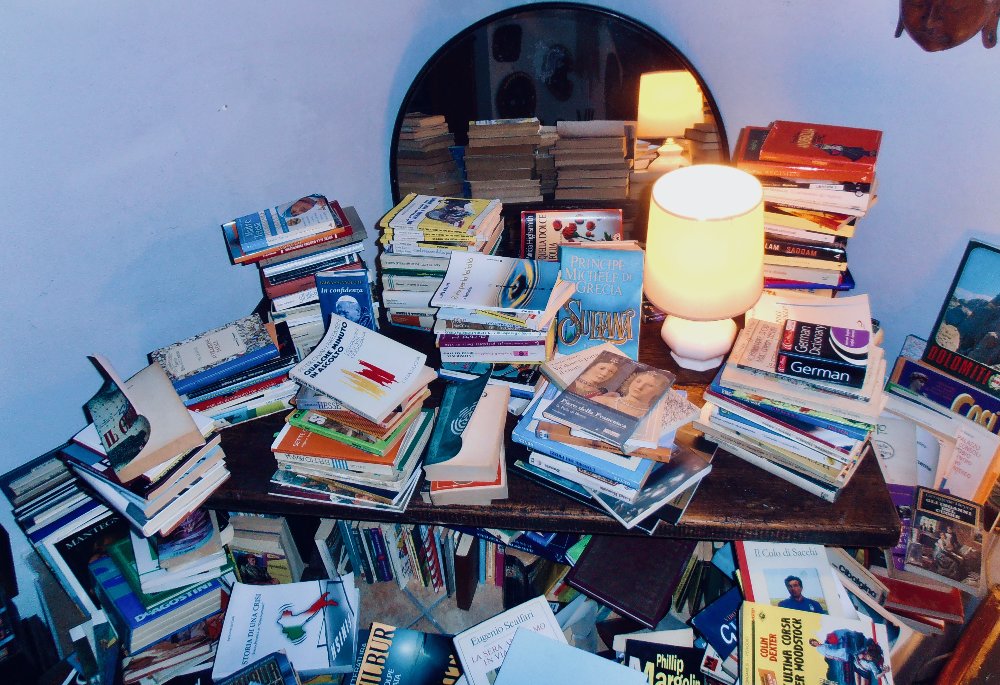
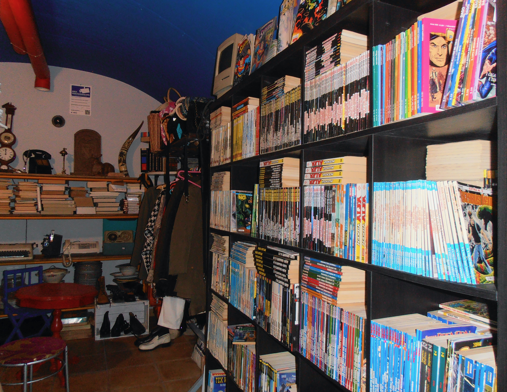
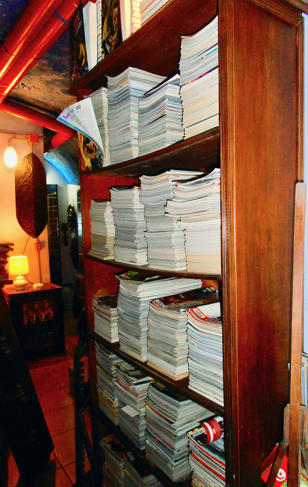
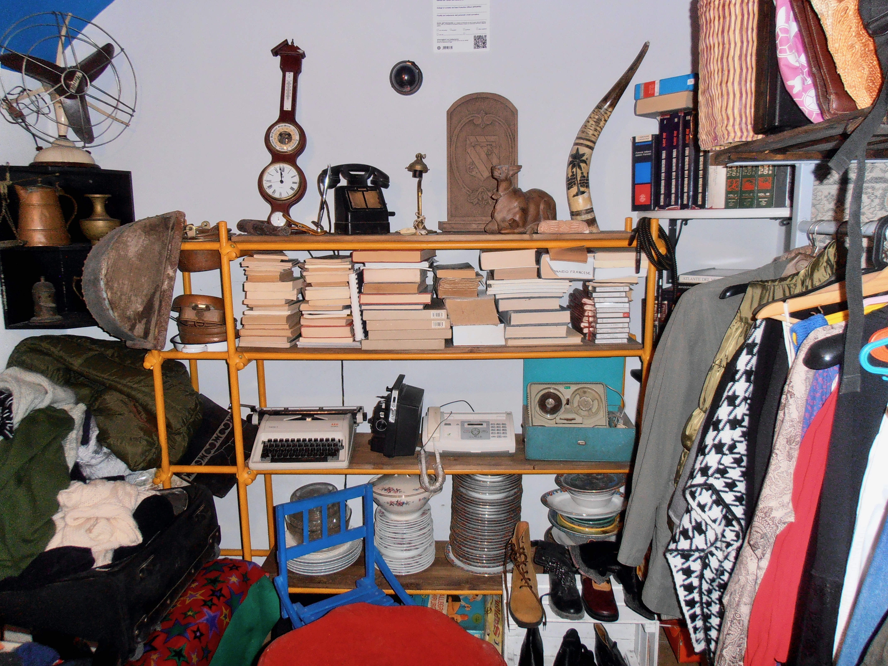

Catalogo

Colonnina destra
Crisi della sinistra in offerta!
Scaffale alto (saggistica)
Storia della filosofia
Spiritualità - Esoterismo
Monoteismi
Oriente
Parapsicologia
Psicologia
Sport & Salute
Scuola & Lavoro
Generi - Famiglia - Natalità
Critica letteraria - Editoria
Filosofia Antica
Filosofia Medievale e Moderna
Filosofia Moderna
Filosofia Moderna e Contemporanea
Filosofia Contemporanea
Epistemologia & Scienze
Diritto & Giurisprudenza
Economia
Ecologia & Agricoltura
Cinema & Teatro
Scaffale sinistro (i luoghi del bello)
Arte
Arte & Viaggi
Viaggi
Libri in Lingua (Inglese, francese, tedesco, spagnolo)
Scaffale destro (storia & storie)
Storia
Attualità
Classici della Letteratura
Narrazioni Contemporanee

Nicchia sound & vision
Musica & audiovisivi
Vinili 33 giri
Vinili 45 giri
CD audio
DVD
Manuali
Spartiti
Monografie
Riviste
Scaffale rosso (letterature pop)
Gialli & noir
Spionaggio
Fantascienza, fantasy, horror
Confidenziali & umoristici
Fiabe

Scaffale blu (fumetti)
Classici & avventura
Numeri speciali Bonelli
Numeri speciali Marvel
Numeri speciali DC
Numeri speciali Manga
Produzioni indipendenti
Angolo del teatro
Testi teatrali
Sceneggiature
Nicchia destra (greco-romana)
Classici greci
Classici latini
Baule della poesia
Libri, sillogi, raccolte poetiche
Scaffale riviste
Luoghi
Natura
Letteratura
Arte
Filosofia
Scienza
Società
Internazionali

Scaffale alto (romanità)
Roma, Tuscolo & territorio
Scaffale sopra la vetrina (preziosità)
Libri antichi & rari
Scaffale gastronomico (sotto il bancone)
Vino & cucina
RIcettari
Enotecnica
Profumi
Scaffale definizioni (sopra il bancone)
Dizionari
Vocabolari
Colonnina sinistra
Letteratura russa
Teatro russo
Storie della guerra fredda
Nella vetrina (e qua e là)
Vitange: vestiti, bigiotteria, quadri, cartoline, oggetti
Piano inferiore

Offerte speciali

Collezioni Bonelli, Disney, manga e avventura

Collezioni Marvel & DC

Vintage: abbigliamento e modernariato
SE NON VEDETE QUALCOSA, CHIEDETE!
(pagina in via di allestimento)